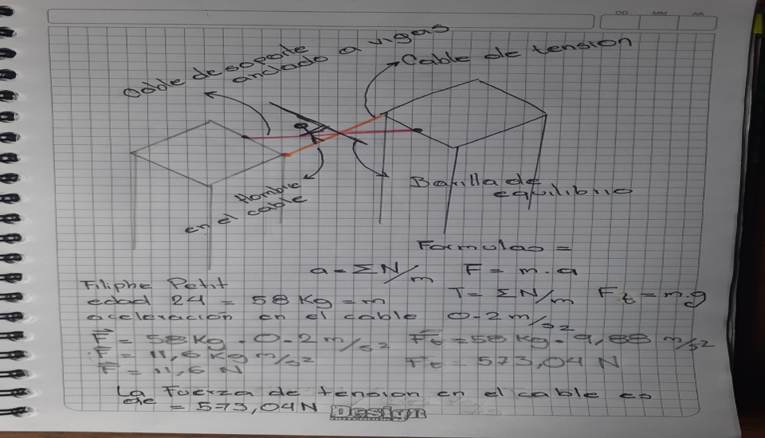

Fuerza de Tension En base a Pelicula Man of Wire
El funambulista Philippe Petit se gana la vida actuando en la calle, siempre en busca del lugar perfecto para tender su cable. Cuando descubre las Torres Gemelas de Nueva York, aún en construcción, las convierte en su próximo objetivo.
Para lograr esta hazaña, utilizó un cable de unos 200 kilogramos de peso y un contrapeso personalizado de 8 metros de largo y 25 kilogramos de peso.Petit partió de la torre sur sobre su cable de acero. Con 24 años de edad, cruzó ocho veces entre las torres casi terminadas, a más de 400 metros sobre las aceras de Manhattan, en un evento que duró unos 45 minutos
Para este cálculo de tensión dejaremos de lado las especificaciones del cable ya que este se encontraba estabilizado por los llamados “cabaletis””(cables de soporte que proporcionan estabilidad y tensionan el cable principal) ubicados de forma horizontal a los edificios más trozos de madera alrededor de las vigas de acero que sostenían el cable daban más durabilidad en cuestión de tiempo para que estos trozos se desgastaran y no que la tensión en el acero generará un estallido de el cable lo que provocaría que el sujeto cayera al vacío o por la distancia de 42 m de los edificios este eyectara a gran velocidad he hiciera daño a los presentes
TENSION EN CABLES
Para este ejercicio notamos en la película que en un momento el cable al ser pasado por los dos edificios se empieza a deslizar y a caer por su peso y fallos humanos por lo que philippe decide que antes de que se caiga al suelo o choque contra el otro edificio lo ancla al piso del edificio lo que hace que el cable se detenga abruptamente en un ángulo lo que hace que quede tensionado y con mas peso ¿Cuál es la tensión del cable al momento de la caída?


conclusiones
Esto nos demuestra que cualquier persona puede hacer cualquier cosa mientras tenga calros o tenga los conocimientos y experiencia de fisica y como aplicarla a una situacion real
¿que aprendi?
a´premndi en esta clase sobre conceptos de fisica bastante interesantes y de gran ayuda ademas de programacion y abrir mi mente a base de simuladores como podria aplicar mis conocimientos en programacion y enfocarlos a la fisica